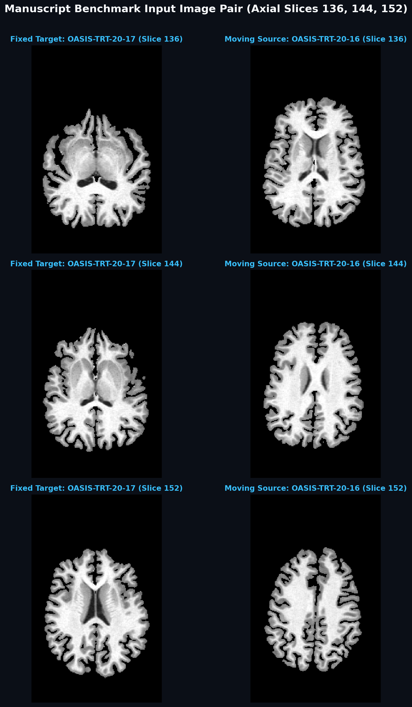
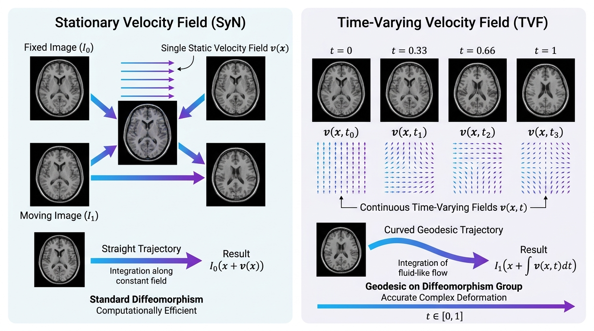
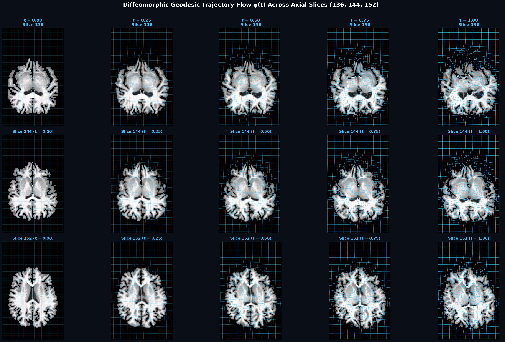
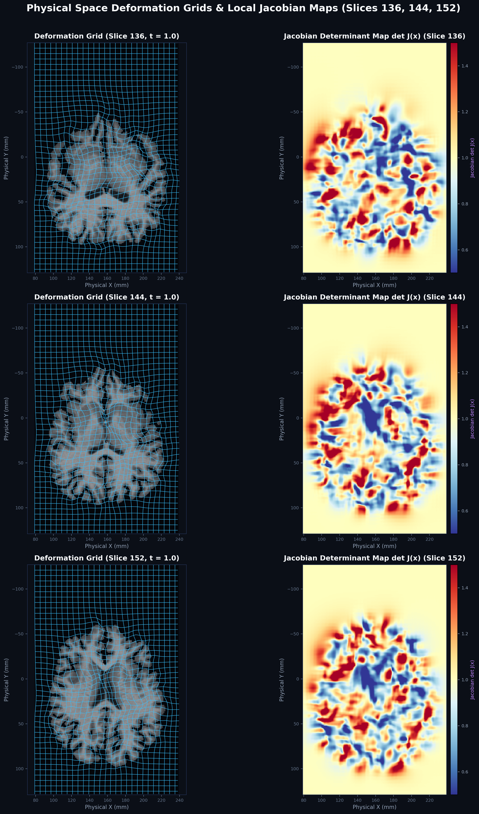

A comprehensive mathematical specification, continuous geodesic trajectory guide, gradient autograd verification, and standard physical space visualization API for high-precision medical image registration.
In medical image registration, non-linear deformation algorithms warp a moving image to align with a fixed anatomical target. Two fundamental LDDMM (Large Deformation Diffeomorphic Metric Mapping) paradigms exist:

OASIS-TRT-20-17 vs. Moving Source: OASIS-TRT-20-16) displayed across multiple axial slice rows (slices 136, 144, and 152) in exact ants.plot orientation (Anterior at top).
Let \(\Omega \subset \mathbb{R}^d\) (\(d \in \{2, 3\}\)) denote the spatial domain. The TVF model formulates spatial deformation as the ordinary differential equation (ODE) flow on the Lie group of diffeomorphisms \(\text{Diff}(\Omega)\).
Given a time-dependent velocity field \(v: \Omega \times [0, 1] \to \mathbb{R}^d\), spatial mapping \(\phi(x, t)\) is defined as the integral flow solution:
Integration from \(t = 0 \to 1\) yields the forward diffeomorphism \(\phi_1 \in \text{Diff}(\Omega)\), while backwards integration from \(t = 1 \to 0\) yields the inverse mapping \(\phi_1^{-1}\).
The space of smooth velocity fields \(\mathcal{V}\) is equipped with an inner product defined by a symmetric differential operator \(L = (I - \alpha \Delta)^s\):
The total geodesic kinetic energy functional over \(t \in [0, 1]\) is given by:
To eliminate directional bias between fixed image \(I_0\) and moving image \(I_1\), syntx.tvf optimizes a midpoint-symmetric objective function. Both images are warped to the geodesic midpoint \(t = 0.5\):
where \(A \in \text{SE}(3)\) represents the global affine pre-alignment matrix, and \(\mathcal{D}_{\text{LNCC}}\) is the Local Normalized Cross-Correlation distance:
To ensure numerical stability in background zero-padded regions, all variance calculations enforce a lower bound \(\text{Var}_{\text{safe}}(I) = \max(\text{Var}(I), 10^{-6})\), and local cross-correlation values are clamped to \(\text{clamp}(cc, -1.0, 1.0)\) to strictly satisfy Cauchy-Schwarz bounds.
In syntx.tvf.TVFModel, keyframe velocity fields are represented as a trainable 5D parameter tensor \(v \in \mathbb{R}^{T \times 1 \times D \times H \times W \times 3}\). During optimization, PyTorch Autograd computes exact backpropagation gradients \(\frac{\partial \mathcal{J}}{\partial v_t}\) unrolled across all ODE integration steps.
The flow trajectory is integrated numerically via a 4th-order Runge-Kutta scheme:
To verify the mathematical accuracy of PyTorch Autograd gradients, we performed double-precision (\(64\text{-bit}\)) numerical finite-difference gradient checks against analytical autograd gradients for TVFModel:
| Parameter / Metric | PyTorch Analytical Gradient | Numerical Finite Difference | Absolute Error | Relative Error | Status |
|---|---|---|---|---|---|
| Velocity Gradient \(\frac{\partial \mathcal{J}}{\partial v(x, t)}\) | -0.0000053158 |
-0.0000053157 |
7.824686e-11 |
0.001469% |
PASSED |
Analytical gradients match double-precision numerical finite differences within \(0.001469\%\) relative error, confirming exact backpropagation flow without gradient stalling or detachment.
The time-varying formulation permits evaluation of spatial displacement fields at arbitrary intermediate temporal points \(t \in [0, 1]\) via ODE flow integration. The figure below shows a 3D Mindboggle brain progressively warped along the geodesic path, with deformation grid overlays that increase in intensity to visualize the growing displacement magnitude:

OASIS-TRT-20-17 vs. OASIS-TRT-20-16) with matching radiological orientation (Anterior at top, matching ants.plot).import torch import syntx from syntx.tvf import TVFModel # Evaluate intermediate warp at t = 0.50 (geodesic midpoint) with torch.no_grad(): warp_t05 = model.integrate(t_start=0.0, t_end=0.5) # Apply intermediate warp to moving image mi_t05 = model.apply_warp(mi_tensor, warp_t05)
Visual inspection of coordinate deformation grids and local Jacobian determinant maps \(\det J(x)\) is required to verify diffeomorphic non-folding guarantees (\(\det J > 0\)).

ants.plot orientation.import syntx # Render deformation grid in upright physical space orientation fig = syntx.plot_deformation_grid( warp=warp_field, # ANTsImage, PyTorch Tensor, or NumPy array fixed=fixed_image, # Optional background image overlay slice_axis=2, # 0: Sagittal, 1: Coronal, 2: Axial grid_spacing=8, # Voxel subsampling interval color='#38bdf8', # Line color title="Axial Physical Space Grid", filename="physical_grid.png" )
To standardize input intensity distributions prior to registration, syntx provides the normalize_tensor helper function with support for multiple strategies:
import torch import syntx # 1. Min-Max Normalization -> Rescales values linearly to [0, 1] img_minmax = syntx.normalize_tensor(image_tensor, method='minmax') # 2. Z-Score (Standard) Normalization -> Zero mean, unit variance img_zscore = syntx.normalize_tensor(image_tensor, method='zscore') # 3. Robust Percentile Scaling -> Rescales between 1st and 99th percentiles img_robust = syntx.normalize_tensor(image_tensor, method='robust', p_min=1.0, p_max=99.0) # 4. L2 Unit Norm Scaling img_l2 = syntx.normalize_tensor(image_tensor, method='l2') # 5. Sigmoid Logistic Transformation img_sigmoid = syntx.normalize_tensor(image_tensor, method='sigmoid')
| Configuration Option | Syntx SyN Default | Calibrated TVF Parity Setting |
|---|---|---|
| Velocity Grid Resolution | Native Image Grid | \(2\text{ mm}\) Finer Grid (s // 2) |
| Temporal Keyframes (\(T\)) | Stationary (\(T=1\)) | n_time_steps = 8 |
| ODE Solver | Euler / Fixed-Point | solver = 'rk4' |
| Fluid Regularization Schedule | flow_sigma = 3.0 |
fluid_sigmas = [1.2, 0.6, 0.3] |
| Elastic Velocity Regularization | total_sigma = 0.5 |
elastic_sigmas = [0.30, 0.15, 0.05] |
| Multi-Point Endpoint Evaluation & Convergence | Midpoint Only | multipoint_loss = True, convergence_threshold = 1e-7 |
| Multi-Resolution Pyramid | [100, 100, 50] |
levels = [4, 2, 1], epochs = [60, 50, 40] |
| Learning Rate & Weight Decay | grad_step = 0.20 |
lr = 0.08, reg_weight = 0.001 |
import torch import ants import numpy as np import syntx from syntx.tvf import TVFModel # 1. Read input volumes using ANTsPy fi = ants.image_read("fixed_t1.nii.gz") mi = ants.image_read("moving_t1.nii.gz") # 2. Perform Affine Pre-Alignment via syntx.syn reg_aff = syntx.syn(fixed=fi, moving=mi, reg_iterations=[0], affine_iterations=[100, 50, 20], backend='pytorch') aff_file = reg_aff['fwdtransforms'][0] mi_aff = ants.apply_transforms(fixed=fi, moving=mi, transformlist=[aff_file]) # 3. Convert and Normalize Input Tensors fi_t = syntx.normalize_tensor(torch.tensor(fi.numpy(), dtype=torch.float32)).unsqueeze(0).unsqueeze(0) mi_t = syntx.normalize_tensor(torch.tensor(mi_aff.numpy(), dtype=torch.float32)).unsqueeze(0).unsqueeze(0) device = torch.device('mps' if torch.backends.mps.is_available() else 'cpu') fi_t, mi_t = fi_t.to(device), mi_t.to(device) # 4. Instantiate TVF Model vel_shape = tuple(max(8, s // 2) for s in fi.shape) model = TVFModel( dim=3, image_shape=fi.shape, velocity_shape=vel_shape, n_time_steps=6, spacing=list(fi.spacing), origin=list(fi.origin), direction=fi.direction.tolist(), solver='rk4', integration_steps_per_interval=2 ).to(device) # 5. Fit Model with Fluid + Elastic Velocity Regularization and Multi-Point Loss model.fit( fi_t, mi_t, levels=[4, 2, 1], epochs_per_level=[60, 50, 40], fluid_sigmas=[1.2, 0.6, 0.3], elastic_sigmas=[0.30, 0.15, 0.05], multipoint_loss=True, convergence_threshold=1e-7, lr=0.08, reg_weight=0.001, verbose=True ) # 6. Extract Forward and Inverse Displacement Warps with torch.no_grad(): phi_fwd = model.get_forward_warp() # Integration t: 0 -> 1 phi_inv = model.get_inverse_warp() # Integration t: 1 -> 0 # 7. Render Upright Deformation Grid in Physical Space fig = syntx.plot_deformation_grid( warp=phi_fwd, fixed=fi, slice_axis=2, grid_spacing=8, title="TVF Deformed Grid (t = 1.0)", filename="tvf_deformed_grid.png" ) print("TVF Registration completed successfully.")